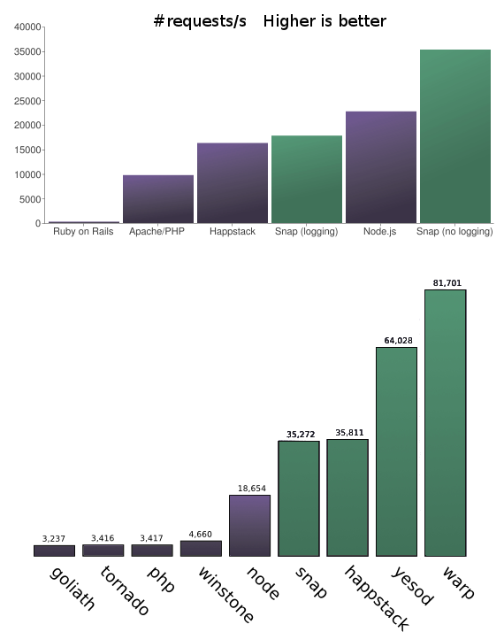

Haskell web programming

update: updated for yesod 0.10
tl;dr: A simple yesod tutorial. Yesod is a Haskell web framework. You shouldn’t need to know Haskell.
Table of content
- Table of Content (generated) {:toc}
Why Haskell?

Its efficiency (see [Snap Benchmark][snapbench] & Warp Benchmark[^benchmarkdigression]). Haskell is an order of magnitude faster than interpreted languages like [Ruby][haskellvsruby] and [Python][haskellvspython][^speeddigression].
Haskell is a high level language and make it harder to shoot you in the foot than C, C++ or Java for example. One of the best property of Haskell being:
“If your program compile it will be very close to what the programmer intended”.
Haskell web frameworks handle parallel tasks perfectly. For example even better than node.js[^nodejstroll].

From the pure technical point of view, Haskell seems to be the perfect web development tool. Weaknesses of Haskell certainly won’t be technical:
- Hard to grasp Haskell
- Hard to find a Haskell programmer
- The Haskell community is smaller than the community for
/.*/ - There is no heroku for Haskell (even if Greg Weber did it, it was more a workaround).
I won’t say these are not important drawbacks. But, with Haskell your web application will have both properties to absorb an impressive number of parallel request securely and to adapt to change.
Actually there are three main Haskell web frameworks:
I don’t think there is a real winner between these three framework. The choice I made for yesod is highly subjective. I just lurked a bit and tried some tutorials. I had the feeling yesod make a better job at helping newcomers. Furthermore, apparently the yesod team seems the most active. Of course I might be wrong since it is a matter of feeling.

Why did I write this article? The yesod documentation and particularly the book are excellent. But I missed an intermediate tutorial. This tutorial won’t explain all details. I tried to give a step by step of how to start from a five minute tutorial to an almost production ready architecture. Furthermore explaining something to others is a great way to learn. If you are used to Haskell and Yesod, this tutorial won’t learn you much. If you are completely new to Haskell and Yesod it might hopefully helps you. Also if you find yourself too confused by the syntax, it might helps to read this article
During this tutorial you’ll install, initialize and configure your first yesod project. Then there is a very minimal 5 minutes yesod tutorial to heat up and verify the awesomeness of yesod. Then we will clean up the 5 minutes tutorial to use some “best practices”. Finally there will be a more standard real world example; a minimal blog system.
[snapbench]: http://snapframework.com/blog/2010/11/17/snap-0.3-benchmarks [^benchmarkdigression]: One can argue these benchmark contains many problems. But the benchmarks are just here to give an order of idea. Mainly Haskell is very fast. [^speeddigression]: Generally high level Haskell is slower than C, but low level Haskell is equivalent to C speed. It means that even if you can easily link C code with Haskell, this is not needed to reach the same speed. Furthermore writing a web service in C/C++ seems to be a very bad idea. You can take a look at a discussion on HN about this. [^nodejstroll]: If you are curious, you can search about the Fibonacci node.js troll. Without any tweaking, Haskell handled this problem perfectly. I tested it myself using yesod instead of Snap. [haskellvsruby]: http://shootout.alioth.debian.org/u64q/benchmark.php?test=all&lang=ghc&lang2=yarv [haskellvspython]: http://shootout.alioth.debian.org/u64q/benchmark.php?test=all&lang=ghc&lang2=python3
Before the real start
Install
The recommended way to install Haskell is to download the Haskell Platform.
Once done, you need to install yesod. Open a terminal session and do:
~ cabal update
~ cabal install yesod cabal-devThere are few steps but it should take some time to finish.
Initialize
You are now ready to initialize your first yesod project. Open a terminal and type:
~ yesod initEnter your name, choose yosog for the project name and enter Yosog for the name of the Foundation. Finally choose sqlite. Now, start the development cycle:
~ cd yosog
~ cabal-dev install && yesod --dev develThis will compile the entire project. Be patient it could take a while the first time. Once finished a server is launched and you could visit it by clicking this link:
Congratulation! Yesod works!
Note: if something is messed up use the following command line inside the project directory.
\rm -rf dist/* ; cabal-dev install && yesod --dev devel
Until the end of the tutorial, use another terminal and let this one open in a corner to see what occurs.
Configure git
Of course this step is not mandatory for the tutorial but it is a good practice.
Copy this .gitignore file into the yosog folder.
cabal-dev
dist
.static-cache
static/tmp
*.sqlite3Then initialize your git repository:
~ git init .
~ git add .
~ git commit -a -m "Initial yesod commit"We are almost ready to start.
Some last minute words
Up until here, we have a directory containing a bunch of files and a local web server listening the port 3000. If we modify a file inside this directory, yesod should try to recompile as fast as possible the site. Instead of explaining the role of every file, let’s focus only on the important files/directories for this tutorial:
config/routesHandler/templates/config/models
Obviously:
config/routes | is where you’ll configure the map url → Code. |Handler/ | contains the files that will contain the code called when a url is accessed. |templates/ | contains html, js and css templates. |config/models | is where you’ll configure the persistent objects (database tables). |
During this tutorial we’ll modify other files as well, but we won’t explore them in detail.
Also note, shell commands are executed in the root directory of your project instead specified otherwise.
We are now ready to start!
Echo
To verify the quality of the security of the yesod framework, let’s make a minimal echo application.
Goal:
Make a server that when accessed
/echo/[some text]should return a web page containing “some text” inside anh1bloc.
In a first time, we must declare the url of the form /echo/... are meaningful. Let’s take a look at the file config/routes:
/static StaticR Static getStatic /auth AuthR Auth getAuth /favicon.ico FaviconR GET /robots.txt RobotsR GET / HomeR GET
We want to add a route of the form /echo/[anything] somehow and do some action with this. Add the following:
/echo/#String EchoR GET
This line contains three elements: the url pattern, a handler name, an %http method. I am not particularly fan of the big R notation but this is the standard convention.
If you save config/routes, you should see your terminal in which you launched yesod devel activate and certainly displaying an error message.
Application.hs:31:1: Not in scope: `getEchoR'
Why? Simply because we didn’t written the code for the handler EchoR. Edit the file Handler/Home.hs and append this:
getEchoR :: String -> Handler RepHtml
getEchoR theText = do
defaultLayout $ do
[whamlet|<h1>#{theText}|]Don’t worry if you find all of this a bit cryptic. In short it just declare a function named getEchoR with one argument (theText) of type String. When this function is called, it return a Handler RepHtml whatever it is. But mainly this will encapsulate our expected result inside an html text.
After saving the file, you should see yesod recompile the application. When the compilation is finished you’ll see the message: Starting devel application.
Now you can visit: http://localhost:3000/echo/Yesod%20rocks!
TADA! It works!
Bulletproof?

Even this extremely minimal web application has some impressive properties. For exemple, imagine an attacker entering this url:
[http://localhost:3000/echo/<a>I'm <script>alert("Bad!");](http://localhost:3000/echo/I’m
" %>
The special characters are protected for us. A malicious user could not hide some bad script inside.
This behavior is a direct consequence of type safety. The url string is put inside a url type. Then the interesting part in the url is put inside a String type. To pass from url type to String type some transformation are made. For example, replace all “%20” by space characters. Then to show the String inside an html document, the string is put inside an html type. Some transformations occurs like replace “<” by “<”. Thanks to yesod, this tedious job is done for us.
"http://localhost:3000/echo/some%20text<a>" :: URL
↓
"some text<a>" :: String
↓
"some text &lt;a&gt;" :: Html Yesod is not only fast, it helps us to remain secure. It protects us from many common errors in other paradigms. Yes, I am looking at you PHP!
Cleaning up
Even this very minimal example should be enhanced. We will clean up many details:
- Use a general css (cleaner than the empty by default)
- Dispatch handler code into different files
- Use
Data.Textinstead ofString - Put our “views”1 inside the
templatedirectory
Use a better css
It is nice to note, the default template is based on %html5 boilerplate. Let’s change the default css. Add a file named default-layout.lucius inside the templates/ directory containing:
body {
font-family: Helvetica, sans-serif;
font-size: 18px; }
#main {
padding: 1em;
border: #CCC solid 2px;
border-radius: 5px;
margin: 1em;
width: 37em;
margin: 1em auto;
background: #F2F2F2;
line-height: 1.5em;
color: #333; }
.required { margin: 1em 0; }
.optional { margin: 1em 0; }
label { width: 8em; display: inline-block; }
input, textarea { background: #FAFAFA}
textarea { width: 27em; height: 9em;}
ul { list-style: square; }
a { color: #A56; }
a:hover { color: #C58; }
a:active { color: #C58; }
a:visited { color: #943; }Personally I would prefer if such a minimal css was put with the scaffolding tool. I am sure somebody already made such a minimal css which give the impression the browser handle correctly html without any style applied to it. But I digress.
Separate Handlers
Generally you don’t want to have all your code inside a unique file. This is why we will separate our handlers. In a first time create a new file Handler/Echo.hs containing:
module Handler.Echo where
import Import
getEchoR :: String -> Handler RepHtml
getEchoR theText = do
defaultLayout $ do
[whamlet|<h1>#{theText}|]Do not forget to remove the getEchoR function inside Handler/Home.hs.
We must declare this new file intoyosog.cabal. Just after Handler.Home, add:
Handler.Echo
We must also declare this new Handler module inside Application.hs. Just after the “import Handler.Home”, add:
import Handler.EchoThis is it.
ps: I am sure not so far in the future we could simply write yesod add-handler Echo to declare it and create a new handler file.
Data.Text
It is a good practice to use Data.Text instead of String.
To declare it, add this import directive to Foundation.hs (just after the last one):
import Data.TextWe have to modify config/routes and our handler accordingly. Replace #String by #Text in config/routes:
/echo/#Text EchoR GET
And do the same in Handler/Echo.hs:
module Handler.Echo where
import Import
getEchoR :: Text -> Handler RepHtml
getEchoR theText = do
defaultLayout $ do
[whamlet|<h1>#{theText}|]Use templates
Some html (more precisely hamlet) is written directly inside our handler. We should put this part inside another file. Create the new file templates/echo.hamlet containing:
<h1> #{theText}and modify the handler Handler/Echo.hs:
getEchoR :: Text -> Handler RepHtml
getEchoR theText = do
defaultLayout $ do
$(widgetFile "echo")At this point, our web application is structured between different files. Handler are grouped, we use Data.Text and our views are in templates. It is the time to make a slightly more complex example.
Mirror
Let’s make another minimal application. You should see a form containing a text field and a validation button. When you enter some text (for example “Jormungad”) and validate, the next page present you the content and its reverse appended to it. In our example it should return “JormungaddagnumroJ”.
First, add a new route:
/mirror MirrorR GET POST
This time the path /mirror will accept GET and POST requests. Add the corresponding new Handler file:
module Handler.Mirror where
import Import
import qualified Data.Text as T
getMirrorR :: Handler RepHtml
getMirrorR = do
defaultLayout $ do
$(widgetFile "mirror")
postMirrorR :: Handler RepHtml
postMirrorR = do
postedText <- runInputPost $ ireq textField "content"
defaultLayout $ do
$(widgetFile "posted")Don’t forget to declare it inside yosog.cabal and Application.hs.
We will need to use the reverse function provided by Data.Text which explain the additional import.
The only new thing here is the line that get the POST parameter named “content”. If you want to know more detail about it and form in general you can take look at the yesod book.
Create the two corresponding templates:
<h1> Enter your text
<form method=post action=@{MirrorR}>
<input type=text name=content>
<input type=submit><h1>You've just posted
<p>#{postedText}#{T.reverse postedText}
<hr>
<p><a href=@{MirrorR}>Get backAnd that is all. This time, we won’t need to clean up. We may have used another way to generate the form but we’ll see this in the next section.
Just try it by clicking here.
Also you can try to enter strange values. Like before, your application is quite secure.
A Blog
We saw how to retrieve %http parameters. It is the time to save things into a database.
As before add some routes inside config/routes:
/blog BlogR GET POST /blog/#ArticleId ArticleR GET
This example will be very minimal:
GETon/blogshould display the list of articles.POSTon/blogshould create a new articleGETon/blog/<article id>should display the content of the article.
First we declare another model object. Append the following content to config/models:
Article
title Text
content Html
deriving
As Html is not an instance of Read, Show and Eq, we had to add the deriving line. If you forget it, there will be an error.
After the route and the model, we write the handler. First, declare a new Handler module. Add import Handler.Blog inside Application.hs and add it into yosog.cabal. Let’s write the content of Handler/Blog.hs. We start by declaring the module and by importing some block necessary to handle Html in forms.
module Handler.Blog
( getBlogR
, postBlogR
, getArticleR
)
where
import Import
import Data.Monoid
-- to use Html into forms
import Yesod.Form.Nic (YesodNic, nicHtmlField)
instance YesodNic AppRemark: it is a best practice to add the YesodNic instance inside Foundation.hs. I put this definition here to make things easier but you should see a warning about this orphan instance. To put the include inside Foundation.hs is left as an exercice to the reader.
Hint: Do not forget to put YesodNic and nicHtmlField inside the exported objects of the module.
entryForm :: Form Article
entryForm = renderDivs $ Article
<$> areq textField "Title" Nothing
<*> areq nicHtmlField "Content" NothingThis function defines a form for adding a new article. Don’t pay attention to all the syntax. If you are curious you can take a look at Applicative Functor. You just have to remember areq is for required form input. Its arguments being: areq type label default_value.
-- The view showing the list of articles
getBlogR :: Handler RepHtml
getBlogR = do
-- Get the list of articles inside the database.
articles <- runDB $ selectList [] [Desc ArticleTitle]
-- We'll need the two "objects": articleWidget and enctype
-- to construct the form (see templates/articles.hamlet).
(articleWidget, enctype) <- generateFormPost entryForm
defaultLayout $ do
$(widgetFile "articles")This handler should display a list of articles. We get the list from the DB and we construct the form. Just take a look at the corresponding template:
<h1> Articles
$if null articles
-- Show a standard message if there is no article
<p> There are no articles in the blog
$else
-- Show the list of articles
<ul>
$forall Entity articleId article <- articles
<li>
<a href=@{ArticleR articleId} > #{articleTitle article}
<hr>
<form method=post enctype=#{enctype}>
^{articleWidget}
<div>
<input type=submit value="Post New Article">You should remark we added some logic inside the template. There is a test and a “loop”.
Another very interesting part is the creation of the form. The articleWidget was created by yesod. We have given him the right parameters (input required or optional, labels, default values). And now we have a protected form made for us. But we have to create the submit button.
Get back to Handler/Blog.hs.
-- we continue Handler/Blog.hs
postBlogR :: Handler RepHtml
postBlogR = do
((res,articleWidget),enctype) <- runFormPost entryForm
case res of
FormSuccess article -> do
articleId <- runDB $ insert article
setMessage $ toHtml $ (articleTitle article) <> " created"
redirect $ ArticleR articleId
_ -> defaultLayout $ do
setTitle "Please correct your entry form"
$(widgetFile "articleAddError")This function should be used to create a new article. We handle the form response. If there is an error we display an error page. For example if we left some required value blank. If things goes right:
- we add the new article inside the DB (
runDB $ insert article) - we add a message to be displayed (
setMessage $ ...) - we are redirected to the article web page.
Here is the content of the error Page:
<form method=post enctype=#{enctype}>
^{articleWidget}
<div>
<input type=submit value="Post New Article">Finally we need to display an article:
getArticleR :: ArticleId -> Handler RepHtml
getArticleR articleId = do
article <- runDB $ get404 articleId
defaultLayout $ do
setTitle $ toHtml $ articleTitle article
$(widgetFile "article")The get404 function try to do a get on the DB. If it fails it return a 404 page. The rest should be clear. Here is the content of templates/article.hamlet:
<h1> #{articleTitle article}
<article> #{articleContent article}The blog system is finished. Just for fun, you can try to create an article with the following content:
<p>A last try to <em>cross script</em>
and <em>SQL injection</em></p>
<p>Here is the first try:
<script>alert("You loose");</script></p>
<p> And Here is the last </p>
"); DROP TABLE ARTICLE;;Conclusion
This is the end of this tutorial. I made it very minimal.
If you already know Haskell and you want to go further, you should take a look at the recent i18n blog tutorial. It will be obvious I inspired my own tutorial on it. You’ll learn in a very straightforward way how easy it is to use authorizations, Time and internationalization.
If, on the other hand you don’t know Haskell. Then you shouldn’t jump directly to web programming. Haskell is a very complex and unusual language. My advice to go as fast as possible in using Haskell for web programming is:
- Start by try Haskell in your browser
- Then read the excellent Learn you a Haskell for Great Good
- If you have difficulties in understanding concepts like monads, you should really read these articles. For me they were enlightening.
- If you feel confident, you should be able to follows the yesod book and if you find difficult to follows the yesod book, you should read real world Haskell first (it is a must read).
Also, note that:
- haskell.org is full of excellent resources.
- hoogle will be very useful
- Use hlint as soon as possible to get good habits.
As you should see, if you don’t already know Haskell, the path is long but I guaranty you it will be very rewarding!
ps: You can download the source of this yesod blog tutorial at github.com/yogsototh/yosog.
By view I mean yesod widget’s hamlet, lucius and julius files.↩